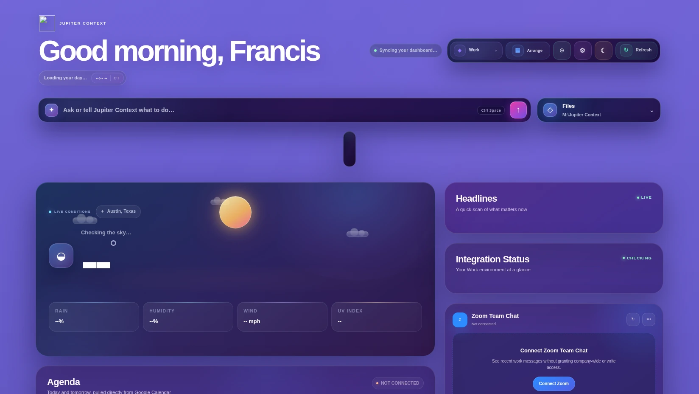
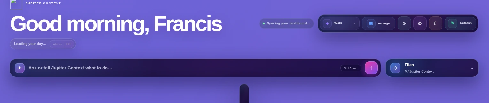
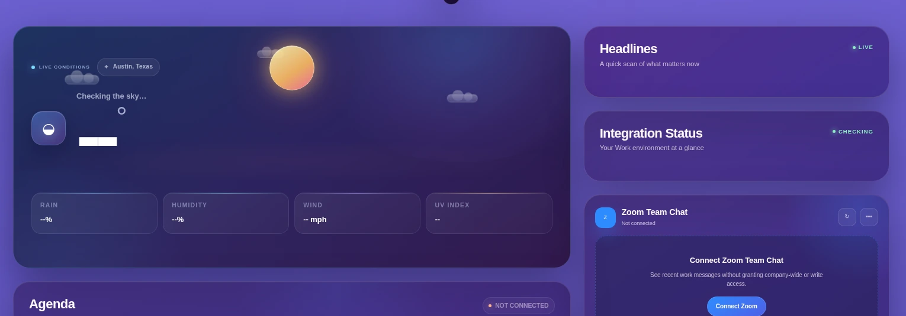
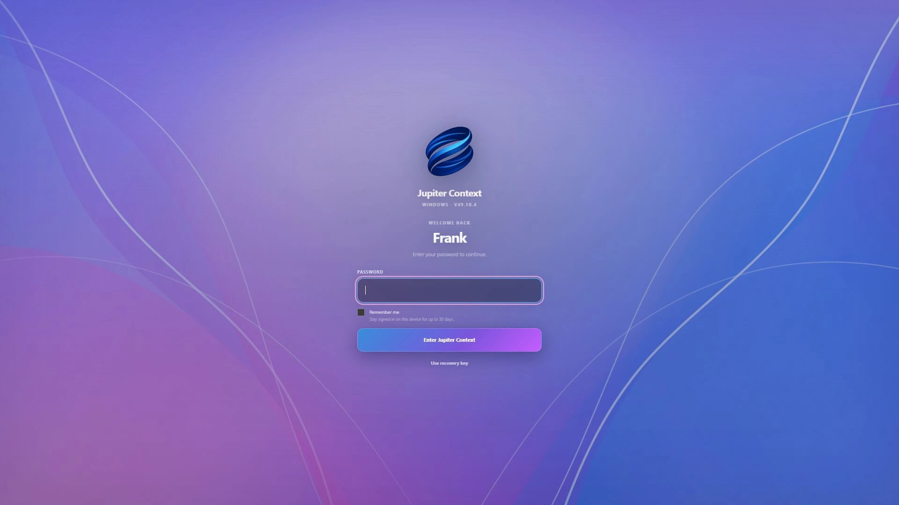

01
Start with intent.
Ask, search, launch, and act from one Command Center instead of hunting through software first.
Jupiter Context for Windows · V49.12.18
Workspaces, files, meetings, media, applications, and AI. One adaptive environment built around your context.
Local-first. User-controlled. Designed for Windows.

A new starting point
Traditional desktops make you translate every goal into apps, tabs, folders, and settings. Jupiter Context keeps the tools you already use, then organizes them around what you are actually doing.
Ask, search, launch, and act from one Command Center instead of hunting through software first.
Work, Personal, and Focus retain their own apps, layout, Dock, appearance, and notification behavior.
Your files and information stay on your machine unless you explicitly connect a service.
Command Center
Questions, commands, search, applications, and AI begin from one consistent surface. Jupiter resolves local actions first, then reaches outward when outside intelligence adds value.

Open the system, search, and act without breaking focus.
Commands understand which environment, files, and applications are currently relevant.
A consistent surface replaces the daily scavenger hunt across software.
Adaptive workspaces
Weather, headlines, calendar, files, messages, media, and system health can live in one coherent surface. Every adaptive rule remains visible, reversible, and controlled by you.

Identity and access
The new sign-in experience gives Jupiter Context the presence of a complete operating environment while keeping the session local to the device.

Applications become capabilities
The tools that already do their jobs well remain. Jupiter Context gives them a shared language, lifecycle, health model, and place inside each workspace.
Trust is part of the architecture
Jupiter Context is built around a simple constraint: the system may understand more, but the user must never understand less.
Recommendations are welcome. Silent persistent changes are not.
Rules and routines can be inspected, edited, disabled, or reversed.
Jupiter coordinates existing tools unless replacement creates lasting value.
The core experience remains meaningful without mandatory cloud ownership.
Windows alpha
The current pre-alpha validates the complete Jupiter Context experience before the first wider Windows release.